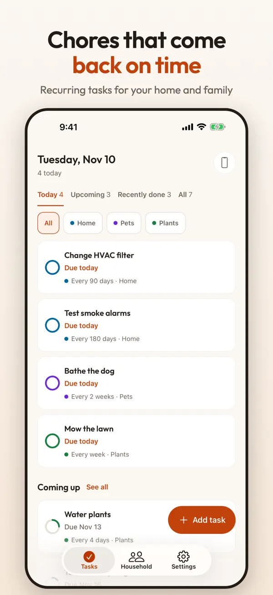
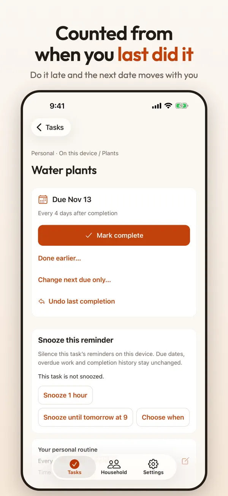
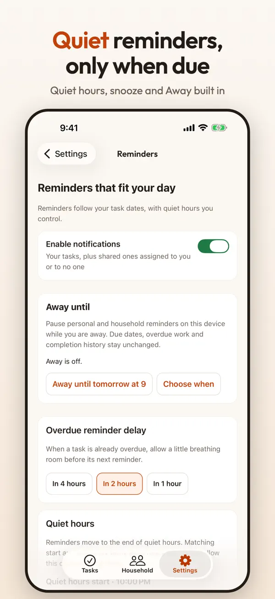
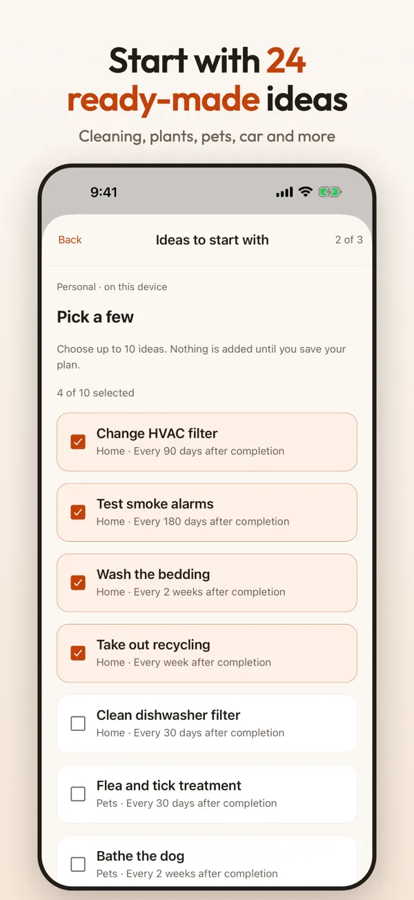
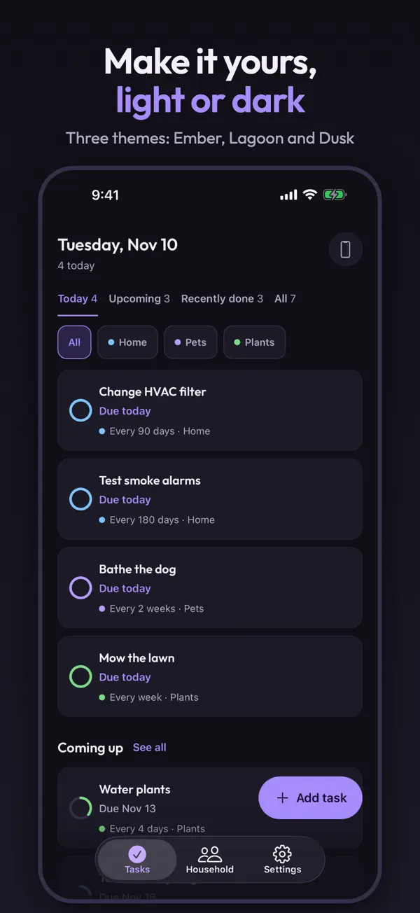

Tasks that come back on time
Cadence keeps track of everything at home that comes around again: the laundry, the plants, the filters, the bins.
Free to start. No ads. Works without an account.





Counted from when you actually did it
Most reminder apps repeat on a fixed date whether or not you did the thing. Cadence starts the clock when you finish.
- Add a taskWater the plants every three days, or pick from 24 ideas for cleaning, plants, pets and the car.
- Tap doneOne tap when you do it. Did it yesterday? Say so, and the next date follows.
- It comes back on timeWater them on Tuesday and they're next due Friday, not on whatever day a calendar picked.
Made for real homes
Today at a glance
What's due now, with what's coming up underneath. A ring on each task fills as its next turn gets closer.
Schedules that fit
Repeat a task a set number of days after you last did it, or keep it on fixed days, like bins every Thursday.
Reminders that stay quiet
A reminder when something is due, a morning summary, quiet hours, snooze, and Away for when you're travelling.
Share a household
Invite family or roommates with a code. Assign a task, leave it open, and see who did what, and when.
Free, or Cadence Plus
Free
- 10 recurring tasks on your own list, and 10 in a household
- Unlimited one-off tasks
- A household of 2
- Backup when you sign in
Cadence Plus
- Unlimited recurring tasks for you and your household
- A household of up to 6
- Automatic turns and a weekly look at how the work is shared
- Short plans for when you have 5, 10, 20 or 30 minutes
One subscription covers your own list and one household. The app shows your price before you buy.
Questions
Do I need an account?
No. Without one, your tasks stay on your device. Sign in to back them up and get them back on a new phone. Backup is part of the free plan.
Is it on Android?
It's in review on Google Play now. The Android app starts with the free plan, and Plus follows.
Who gets reminded about a shared task?
Each person is reminded about the shared tasks assigned to them and the ones assigned to nobody. A task assigned to someone else never reminds you.
How do I cancel Plus?
Subscriptions are managed by the store you bought from. On iPhone or iPad, open Settings, tap your name, then Subscriptions. You keep Plus until the end of the period you paid for.
How do I delete my data?
In the app, open Settings, then Account details, then Delete account. More answers are on the support page.
Get Cadence
Questions? Write to support@use-cadence.app.